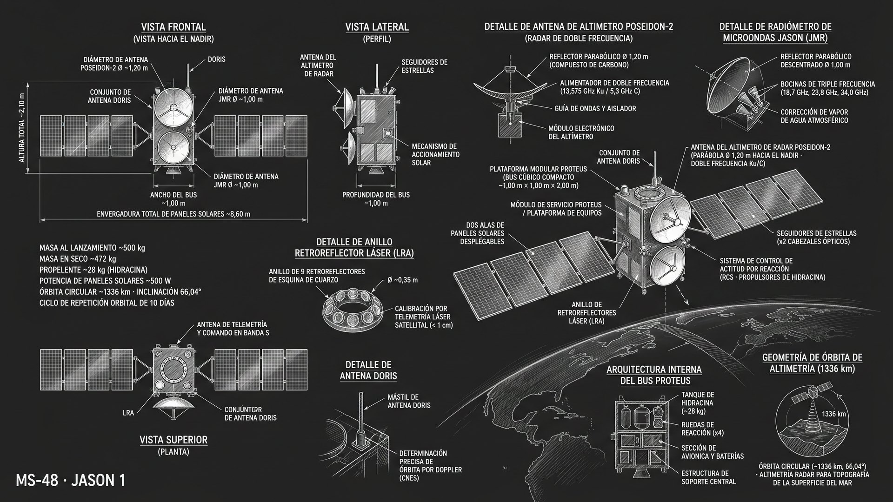

Jason-1

Fue el satélite de altimetría oceánica de la NASA y el CNES que continuó la serie de TOPEX/Poseidon midiendo el nivel del mar, la velocidad del viento y la altura del oleaje en más del 95 % del océano libre de hielo cada diez días. Diseñado para tres a cinco años, operó once y medio y se desactivó en julio de 2013.
Se perdió el contacto el 21 de junio de 2013 por el fallo irreversible de su último transmisor, después de que el de reserva fallara en septiembre de 2005. Fue pasivado el 1 de julio de 2013 en su órbita cementerio: sin control de actitud, sus baterías se descargaron y quedó inerte, sin reentrada atmosférica prevista en al menos 1.000 años. Personas: Lee-Lueng Fu, Mark Fujishin
Lo que hizo
- Vuelo en tándem con TOPEX/Poseidon — En enero de 2002 alcancé mi órbita operativa de 1.337 km y volé sobre la misma traza que TOPEX/Poseidon separado apenas un minuto, lo que permitió comparar ambas medidas en condiciones casi idénticas y empalmar sin saltos un registro climático de más de veinte años.
- Misión geodésica final y pérdida de contacto — En la primavera de 2012 se me trasladó a mi órbita cementerio y se me reconvirtió para estudiar el campo de gravedad marino; el primer ciclo geodésico completo de 406 días terminó el 17 de junio de 2013 y cuatro días después se perdió el contacto para siempre.
Modelo 3D, chat y cómic, en tres idiomas
Fuentes
- www.jpl.nasa.gov/missions/jason-1/
- www.jpl.nasa.gov/news/long-running-jason-1-ocean-satellite-takes-final-bow/
- sealevel.jpl.nasa.gov/missions/jason-1/summary/
Ver el índice completo · Proyecto del NASA Space Apps Challenge 2026. Contenido con fuentes citadas.